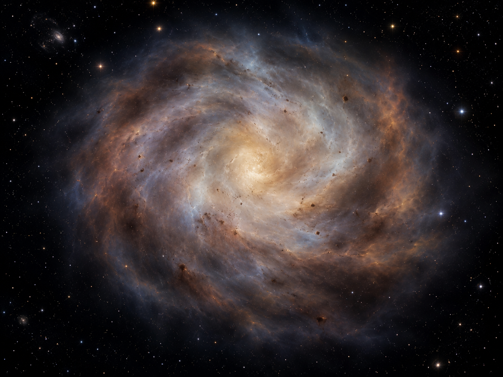
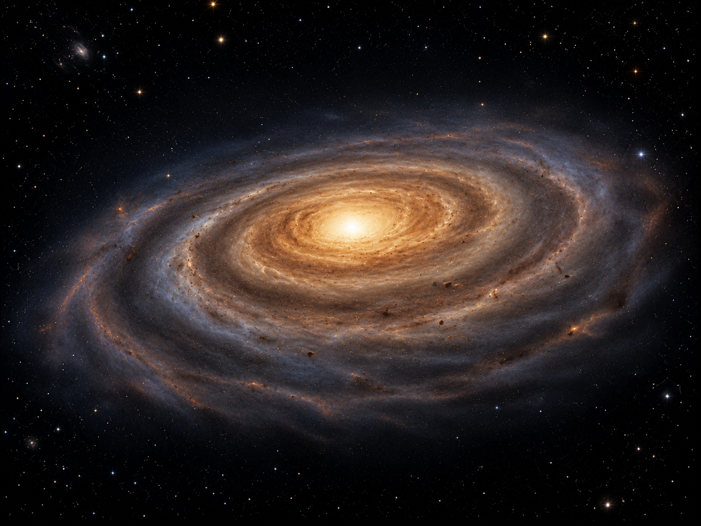
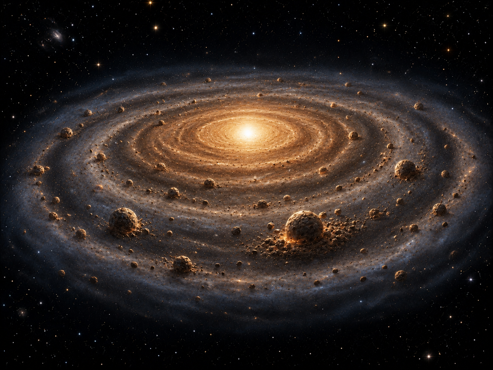
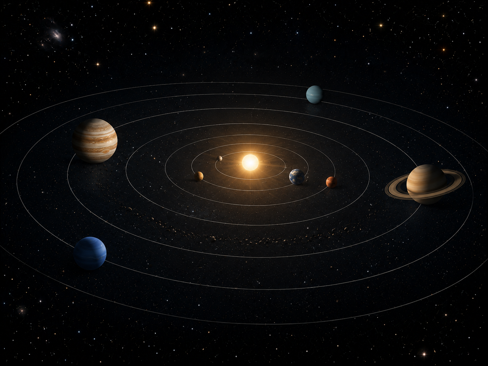

STAGE 01
原始太陽星雲
太陽系最早是一團由氣體與塵埃組成的星雲，主要成分是氫、氦，並混有岩石與金屬微粒。星雲可能受到附近超新星爆炸的震波擾動，使物質被壓縮而開始聚集；也可能因星雲本身的重力不穩定，逐漸向內塌縮。這個階段的重點是「重力開始勝過向外擴散」，星雲密度提高，成為太陽系形成的起點。
太陽星雲學說用來解釋太陽系的形成：原始星雲因重力收縮而旋轉加快，逐漸扁平成盤，中心形成太陽，盤面中的物質經吸積作用形成微行星與行星。

太陽系最早是一團由氣體與塵埃組成的星雲，主要成分是氫、氦，並混有岩石與金屬微粒。星雲可能受到附近超新星爆炸的震波擾動，使物質被壓縮而開始聚集；也可能因星雲本身的重力不穩定，逐漸向內塌縮。這個階段的重點是「重力開始勝過向外擴散」，星雲密度提高，成為太陽系形成的起點。

星雲塌縮時，原本微小的旋轉會因角動量守恆而變得更快，就像旋轉中的人收回手臂會轉得更快。大量物質往中心集中，使中心區域溫度與密度升高，形成原始太陽；外圍物質則因旋轉而不會直接落入中心，逐漸攤平成扁平的原行星盤。行星公轉方向大多相同，且軌道大致位在同一平面，正是由同一旋轉盤面形成所留下的特徵。

原行星盤中的塵埃、金屬微粒、岩塊與冰粒不斷碰撞，有些碰撞會讓物質黏合，形成越來越大的團塊，這個過程稱為吸積作用。團塊變大後，重力也會增強，更容易吸引周圍物質，進一步長成微行星與原行星。靠近太陽的區域溫度高，冰與氣體不容易保留，因此較容易形成岩石質的類地行星；較遠處溫度低，可保留冰與氣體，形成類木行星的核心與厚大氣。

當中心原始太陽溫度夠高，開始進行核融合後，太陽風會把部分殘餘氣體與塵埃吹散。盤面中已成長的原行星逐漸清除各自軌道附近的物質，形成今天的行星系統。剩餘沒有併入行星的物質，可能成為小行星、彗星、衛星或其他小天體。這個階段要能連回觀察證據：行星大多同向公轉、軌道近似共平面，符合由同一旋轉星雲盤形成的結果。
原始星雲由氣體與塵埃組成，主要成分是氫與氦，也含有岩石、金屬等微粒。當附近超新星爆炸的震波壓縮星雲，或星雲本身因重力不穩定而聚集時，局部密度升高，物質開始向中心塌縮。
星雲塌縮使大量物質往中心集中，中心區域的密度與溫度不斷上升，逐漸形成原始太陽。外圍物質因旋轉而不會全部落入中心，開始在中心周圍留下旋轉中的物質盤。
星雲收縮時角動量守恆，旋轉速度變快，物質逐漸攤平成扁平的原行星盤。這個盤面提供了行星形成的場所，也留下行星大多同方向公轉、軌道近似共平面的特徵。
原行星盤中的塵埃、冰粒與岩塊互相碰撞並黏合，逐漸形成微行星，再合併成原行星與行星。中心太陽開始核融合後，太陽風吹散殘餘氣體，剩餘物質則形成小行星、彗星與衛星等小天體。